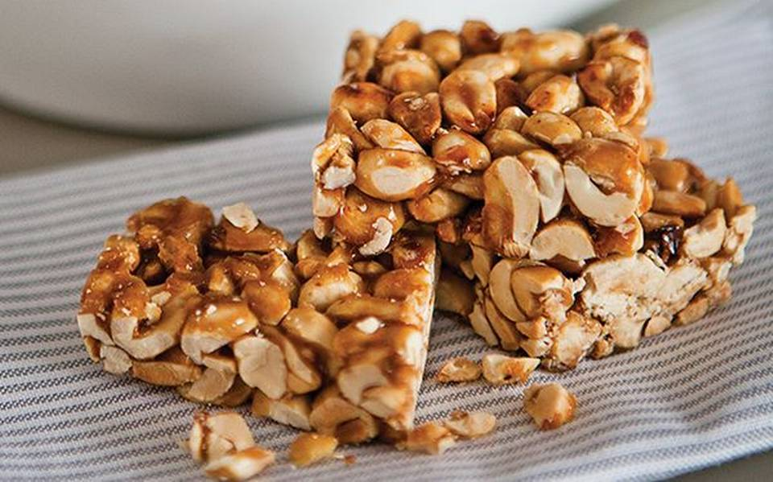

1️⃣Información.
Las palanquetas son un tipo de dulce tradicional en México, elaborado principalmente con cacahuates (maní) y azúcar, aunque también se pueden encontrar con otros ingredientes como nueces, almendras o semillas. La mezcla se cocina hasta que el azúcar se carameliza y luego se vierte en un molde para enfriar y solidificarse. El resultado es una especie de barra o bloque crujiente y dulce.
Las palanquetas tienen su origen en la cocina tradicional mexicana, donde se preparan desde hace mucho tiempo como un dulce sencillo pero delicioso. Son populares en diversas regiones de México y se consideran un clásico en la repostería mexicana. Las palanquetas también tienen variaciones en otros países latinoamericanos, pero el concepto básico de una mezcla de nueces y azúcar es similar.
En algunos lugares, las palanquetas también se conocen como "turrón de cacahuate" o simplemente "turrón" debido a su similitud con otros dulces tradicionales a base de nueces y azúcar que se encuentran en diferentes culturas.
2️⃣Conoce más.
3️⃣Hazlo tú mismo.
Ingredientes.
- 2 tazas de cacahuates (maní) tostados y sin sal
- 1 taza de azúcar
- 1/4 taza de agua
- 1 cucharada de mantequilla
- 1/2 cucharadita de esencia de vainilla (opcional)
Instrucciones:
- Precalienta el horno a 180°C (350°F) y coloca papel para hornear en una bandeja o un molde para hornear.
- En una cacerola grande, mezcla el azúcar con el agua y calienta a fuego medio, revolviendo ocasionalmente, hasta que el azúcar se disuelva.
- Una vez que el azúcar esté disuelto, deja de revolver y deja que la mezcla hierva sin moverla hasta que alcance un color dorado ámbar (aproximadamente 10-15 minutos).
- Retira la cacerola del fuego y añade la mantequilla y la esencia de vainilla (si la estás usando). Mezcla bien hasta que la mantequilla se derrita y se incorpore.
- Agrega los cacahuates a la mezcla de caramelo y revuelve rápidamente para que los cacahuates se cubran bien.
- Vierte la mezcla caliente en el molde preparado y extiende uniformemente con una espátula.
- Deja enfriar a temperatura ambiente hasta que la mezcla se endurezca (alrededor de 1-2 horas).
- Una vez que las palanquetas estén firmes, córtalas en barras o trozos según prefieras.